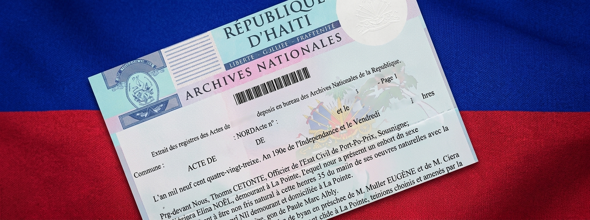

Guide de démarche
Demander un extrait d'archives
Les éléments principaux à préparer pour faciliter votre demande, normale ou urgente.
Extrait d'archives
Cette démarche s'effectue auprès d'une institution privée accréditée par les Archives Nationales. Préparez votre dossier avant votre visite.

Procédure à suivre
Préparez les documents nécessaires ainsi que les frais demandés. Après le paiement, un reçu vous permet généralement de récupérer le dossier ultérieurement.
Procédure normale
- Apporter une copie de l'acte de naissance.
- Prévoir la somme de 700 gourdes.
En cas d'urgence
- Apporter une preuve d'urgence.
- Apporter une copie de l'acte de naissance.
- Prévoir la somme de 700 gourdes.